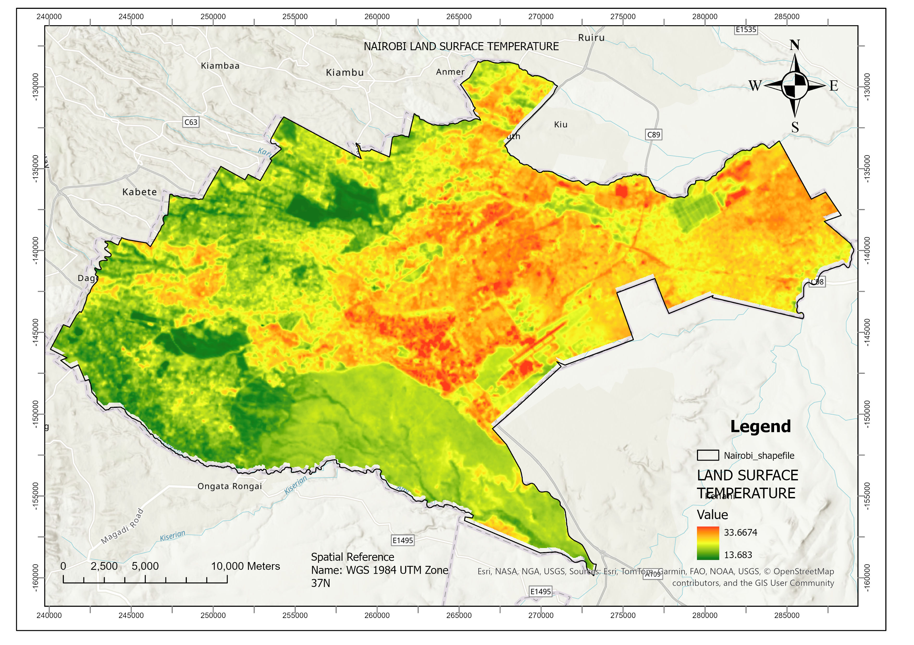
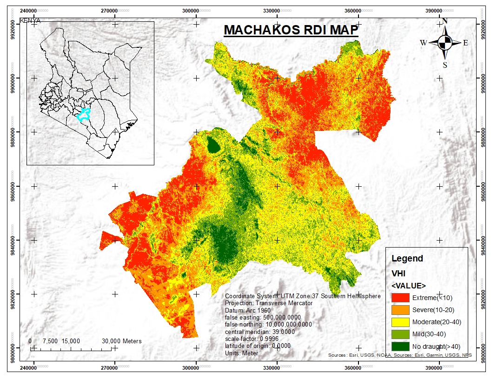
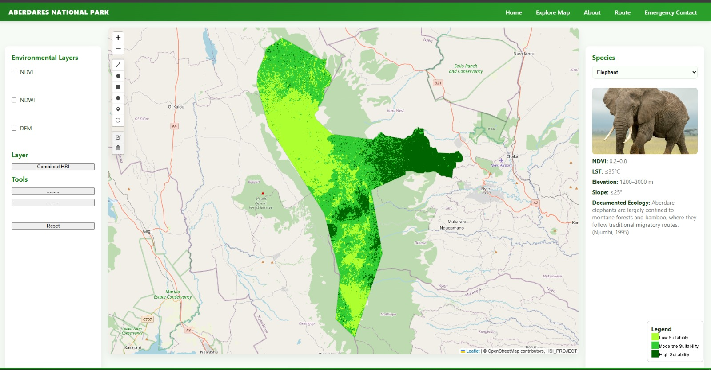
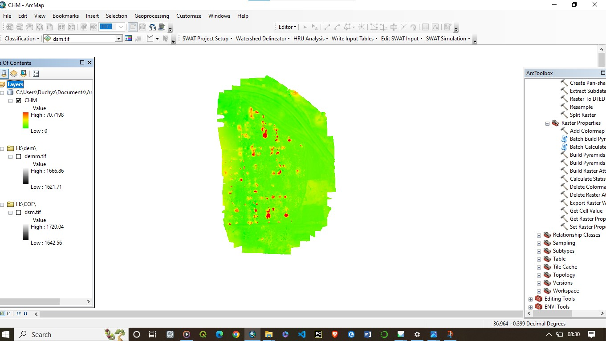

Featured Projects

Landslide Susceptibility – South Pokot

Vegetation Health Monitoring – Kiambu

LST Monitoring – Nairobi County

Crop Health – Machakos

GeoAI in Coffee Plantation

Rainfall Deficiency Index

Web Development – Aberdares National Park

Road Infrastructure Mapping
Mapping of Slums

Development of Land Information System

Georeferencing Kenya Towns

Drone Data – Canopy Height Models (CHM)